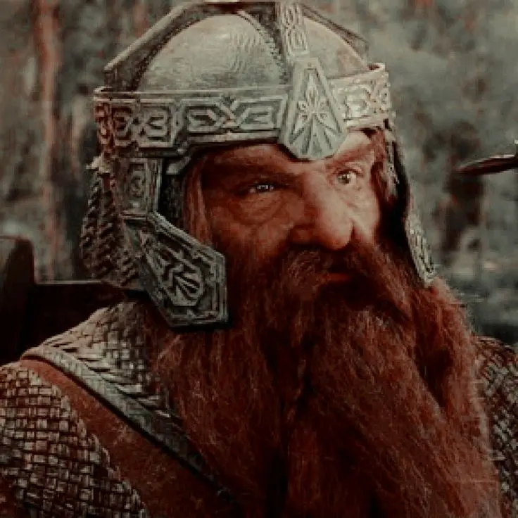
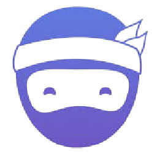
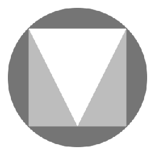
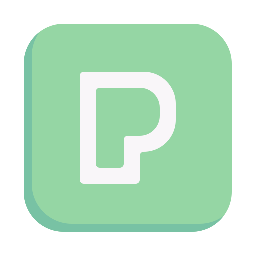
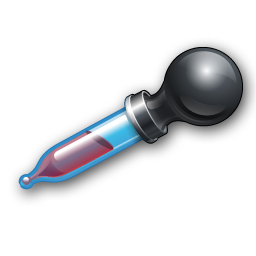

Land-book
Une galerie de pages d'accueil de vrais sites, rangées par secteur d'activité et par style.

Une liste d'outils gratuits pour concevoir un site web, surtout du côté du design : de quoi retrouver des idées, choisir des couleurs et une police, puis remplir la page.
Une galerie de pages d'accueil de vrais sites, rangées par secteur d'activité et par style.

Une galerie de pages d'accueil, avec en prime des maquettes et des polices réutilisables librement.

La vitrine des designers. On y voit surtout des intensions, rarement des sites qui existent vraiment.

Des asssociations de polices et de couleurs présentées ensemble, sur une page d'exemple.

Génère des palettes de cinq couleurs à la barre d'espace, et verouille celles qu'on veur garder.

Une bibliothèque de polices libres, que l'on relie à sa page en une lignex sans rien télécharger.

Un très grand catalogue d'îcones, en SVG comme en PNG. L'offre gratuite demande de citer l'auteur.

Le jeu d'icônes de Google, moins fourni que les catalogues ouverts, mais toutes ses icônes ont le même trait/p>

Fournit une image d'exemple à la taille demandée, directement par son adresse Le faux texte, mais en photo.

Des photos libres, avec une recherche en français et des collection toutes prêtes.

La plus grande bibliothèque de photos libres, et la plus reconnaissable : ses images se croisent partout.
Des illustrations en SVG dont on choisit la couleur avant de les télécharger.

Des personnages à assembler, pose et vêtement au choix. Utile quand une photo ferait trop réaliste.

Une extension de naviguateur qui superpose les problèmes d'accessibilité sur la page, et liste dans son panneau Order l'odre où la touche Tab atteint les éléments.

Une extension qui annonce les technologies employées par le site qu'on visite. La réponse à "C'est fait avec quoi ?".

Une extension de pipette, qui relève la couleur exacte d'un pixel à l'écran et son code hexadécimal.

Intégré à Chrome. Note la page sur cent en performance, en accessibilité et en référencement.